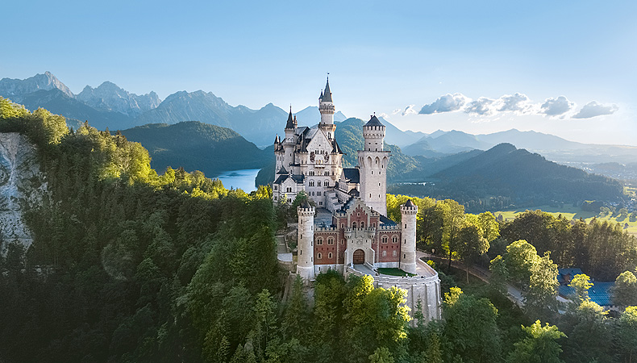
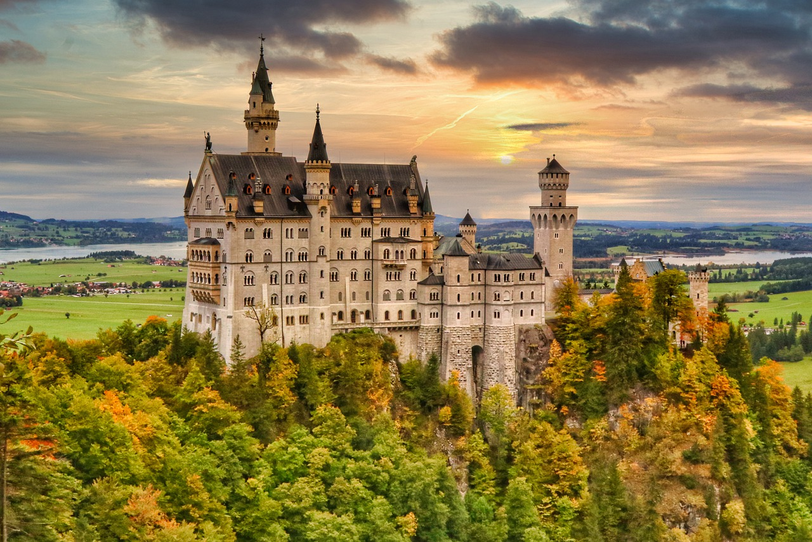
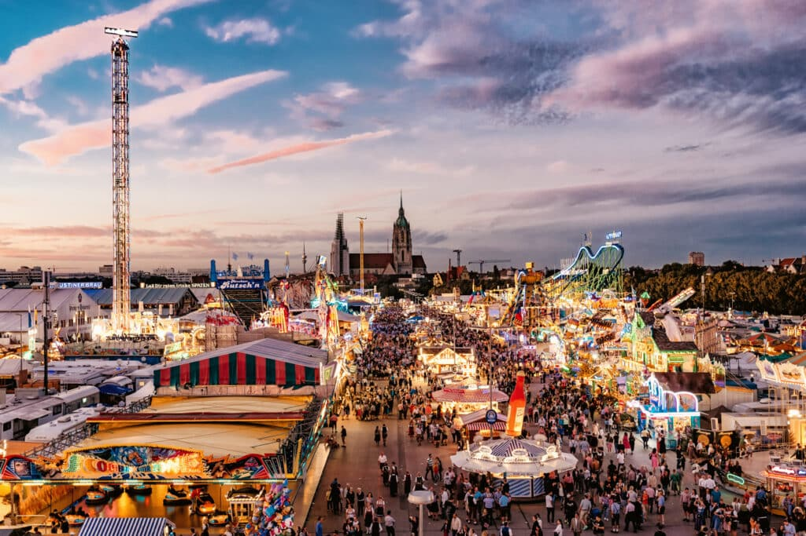
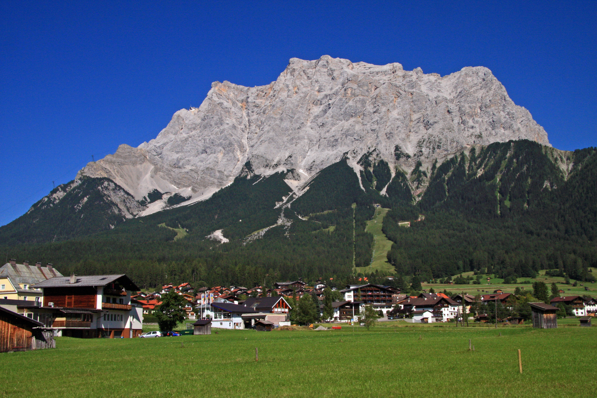

About Bavaria
Bavaria (Bayern) is Germany's largest state and one of its most beloved regions. Nestled in the southeast of the country, it shares borders with Austria and the Czech Republic, offering a unique blend of Alpine scenery, charming villages, and vibrant city life.
The region is famous worldwide for Neuschwanstein Castle — the fairy-tale fortress that inspired Disney — as well as Oktoberfest, lederhosen, and some of Germany's best beer gardens.
Whether you're skiing in Garmisch-Partenkirchen, exploring the old town of Regensburg, or hiking around the crystal-clear Königssee, Bavaria never disappoints.

Top Attractions

Neuschwanstein Castle
The world-famous fairy-tale castle built by King Ludwig II, perched high above the village of Hohenschwangau.

Oktoberfest
The world's most famous beer festival, held in Munich every autumn. A must-visit for any traveler to Bavaria.

Zugspitze
Germany's highest peak at 2,962 meters. Accessible by cable car, offering breathtaking panoramic views.
Things to Do in Bavaria
- Visit Neuschwanstein Castle and the nearby Hohenschwangau Castle
- Attend Oktoberfest in Munich (late September to early October)
- Hike or ski in the Bavarian Alps near Garmisch-Partenkirchen
- Explore the old town (Altstadt) of Regensburg, a UNESCO World Heritage Site
- Take a boat trip on the stunning Königssee lake
- Tour the Dachau Concentration Camp Memorial Site
- Enjoy a beer garden experience in Munich's English Garden